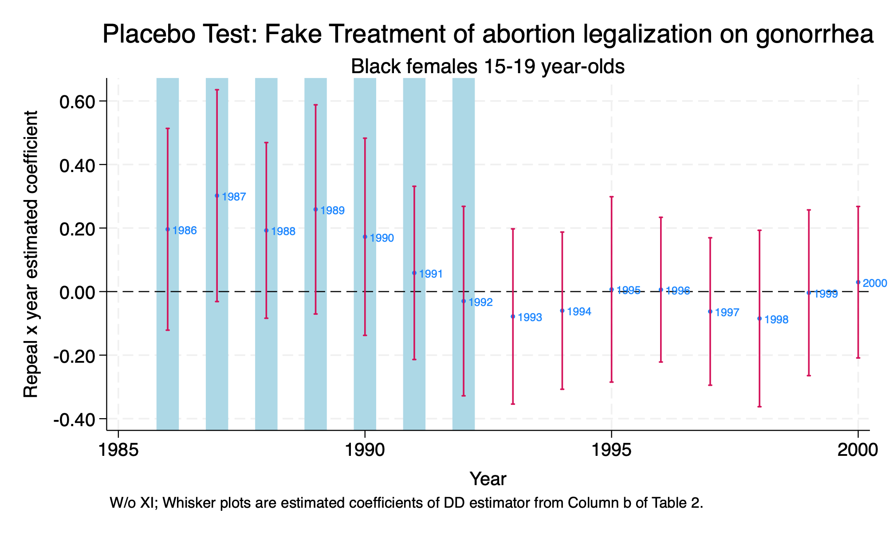

Chapter 2 Placebo Tests
We have two major types of difference-in-differences placebo tests:
- False Treatment
- False Timing
2.1 False Treatment
Our repeal states are Alaska (02), California (06), Hawaii (15), New York (36), Washington (53), so let’s do false treatment placebo. We will assign Florida (12), Minnesota (27), Nevada (32), Ohio (39), and Pennsylvania (42) as our false treatment/repeal states.
use "/Users/Sam/Desktop/Econ 672/Data/abortion.dta", clear
gen repeal_fake = 0
replace repeal_fake = 1 if fip == 12
replace repeal_fake = 1 if fip == 27
replace repeal_fake = 1 if fip == 32
replace repeal_fake = 1 if fip == 39
replace repeal_fake = 1 if fip == 42
tab fip repeal_fake
reg lnr i.repeal_fake##i.year i.fip acc ir pi alcohol crack poverty income ur if bf15==1 [aweight=totpop], cluster(fip)(384 real changes made)
(384 real changes made)
(384 real changes made)
(384 real changes made)
(384 real changes made)
| repeal_fake
FIPSCODE | 0 1 | Total
-----------+----------------------+----------
1 | 384 0 | 384
2 | 384 0 | 384
4 | 384 0 | 384
5 | 384 0 | 384
6 | 384 0 | 384
8 | 384 0 | 384
9 | 384 0 | 384
10 | 384 0 | 384
11 | 384 0 | 384
12 | 0 384 | 384
13 | 384 0 | 384
15 | 384 0 | 384
16 | 384 0 | 384
17 | 384 0 | 384
18 | 384 0 | 384
19 | 384 0 | 384
20 | 384 0 | 384
21 | 384 0 | 384
22 | 384 0 | 384
23 | 384 0 | 384
24 | 384 0 | 384
25 | 384 0 | 384
26 | 384 0 | 384
27 | 0 384 | 384
28 | 384 0 | 384
29 | 384 0 | 384
30 | 384 0 | 384
31 | 384 0 | 384
32 | 0 384 | 384
33 | 384 0 | 384
34 | 384 0 | 384
35 | 384 0 | 384
36 | 384 0 | 384
37 | 384 0 | 384
38 | 384 0 | 384
39 | 0 384 | 384
40 | 384 0 | 384
41 | 384 0 | 384
42 | 0 384 | 384
44 | 384 0 | 384
45 | 384 0 | 384
46 | 384 0 | 384
47 | 384 0 | 384
48 | 384 0 | 384
49 | 384 0 | 384
50 | 384 0 | 384
51 | 384 0 | 384
53 | 384 0 | 384
54 | 384 0 | 384
55 | 384 0 | 384
56 | 384 0 | 384
-----------+----------------------+----------
Total | 17,664 1,920 | 19,584
(sum of wgt is 43,100,087)
note: 42.fip omitted because of collinearity.
Linear regression Number of obs = 736
F(26, 50) = .
Prob > F = .
R-squared = 0.8430
Root MSE = .25494
(Std. err. adjusted for 51 clusters in fip)
-------------------------------------------------------------------------------
| Robust
lnr | Coefficient std. err. t P>|t| [95% conf. interval]
--------------+----------------------------------------------------------------
1.repeal_fake | -.2619235 .3063582 -0.85 0.397 -.877262 .353415
|
year |
1986 | -.0473925 .0623881 -0.76 0.451 -.1727026 .0779176
1987 | -.282811 .1071218 -2.64 0.011 -.4979714 -.0676506
1988 | -.3047447 .1380771 -2.21 0.032 -.5820807 -.0274087
1989 | -.3381935 .1805399 -1.87 0.067 -.7008186 .0244316
1990 | -.3411266 .2247542 -1.52 0.135 -.7925586 .1103054
1991 | -.3638668 .2180394 -1.67 0.101 -.8018117 .0740781
1992 | -.5641131 .2553435 -2.21 0.032 -1.076986 -.0512405
1993 | -.6982166 .25845 -2.70 0.009 -1.217329 -.1791045
1994 | -.704213 .2728245 -2.58 0.013 -1.252197 -.1562289
1995 | -.938756 .3081557 -3.05 0.004 -1.557705 -.3198071
1996 | -1.085633 .3629182 -2.99 0.004 -1.814576 -.3566907
1997 | -1.069773 .4168856 -2.57 0.013 -1.907112 -.2324331
1998 | -1.006071 .4858285 -2.07 0.044 -1.981887 -.0302559
1999 | -1.017142 .5311595 -1.91 0.061 -2.084007 .049723
2000 | -1.062719 .5999853 -1.77 0.083 -2.267825 .1423874
|
repeal_fake#|
year |
1 1986 | .1961008 .1580668 1.24 0.221 -.1213857 .5135873
1 1987 | .3019751 .1659506 1.82 0.075 -.0313465 .6352967
1 1988 | .1925532 .1376346 1.40 0.168 -.083894 .4690004
1 1989 | .2587087 .163867 1.58 0.121 -.070428 .5878453
1 1990 | .1725233 .1545046 1.12 0.269 -.1378082 .4828549
1 1991 | .0588022 .1357068 0.43 0.667 -.2137729 .3313773
1 1992 | -.0298446 .148425 -0.20 0.841 -.3279649 .2682758
1 1993 | -.0782904 .1372765 -0.57 0.571 -.3540183 .1974375
1 1994 | -.0599632 .123157 -0.49 0.628 -.3073313 .1874049
1 1995 | .0068644 .145227 0.05 0.962 -.2848327 .2985614
1 1996 | .006097 .1133758 0.05 0.957 -.221625 .233819
1 1997 | -.0625821 .1155086 -0.54 0.590 -.294588 .1694237
1 1998 | -.0846898 .1382085 -0.61 0.543 -.3622897 .1929101
1 1999 | -.0037381 .1298435 -0.03 0.977 -.2645364 .2570603
1 2000 | .0295735 .1186556 0.25 0.804 -.2087532 .2679002
|
fip |
2 | -1.67931 .7013951 -2.39 0.020 -3.088104 -.2705167
4 | -.4782904 .4415301 -1.08 0.284 -1.36513 .4085488
5 | .0570652 .0799359 0.71 0.479 -.1034908 .2176211
6 | -.9959097 .5272526 -1.89 0.065 -2.054928 .0631083
8 | -.5320145 .4589932 -1.16 0.252 -1.45393 .3899005
9 | -.9013381 .7003092 -1.29 0.204 -2.307951 .5052743
10 | -.3408189 .5989758 -0.57 0.572 -1.543897 .8622595
11 | -1.319298 1.324266 -1.00 0.324 -3.979165 1.340569
12 | -.4700227 .2584934 -1.82 0.075 -.989222 .0491766
13 | -.4658355 .2632261 -1.77 0.083 -.9945406 .0628696
15 | -1.712506 .4372031 -3.92 0.000 -2.590654 -.8343573
16 | -1.698102 .1825109 -9.30 0.000 -2.064686 -1.331518
17 | -.3702913 .4493088 -0.82 0.414 -1.272755 .532172
18 | .1378953 .1998675 0.69 0.493 -.2635504 .5393411
19 | .0936967 .1653353 0.57 0.573 -.238389 .4257823
20 | .3886963 .1730131 2.25 0.029 .0411892 .7362035
21 | -.0840023 .056987 -1.47 0.147 -.1984641 .0304594
22 | -.623181 .2715091 -2.30 0.026 -1.168523 -.0778389
23 | -2.043909 .2082448 -9.81 0.000 -2.462181 -1.625637
24 | -.9304013 .5056388 -1.84 0.072 -1.946007 .0852041
25 | -1.362687 .6297522 -2.16 0.035 -2.627582 -.0977927
26 | -.4230176 .3390352 -1.25 0.218 -1.10399 .2579546
27 | .2942861 .1721111 1.71 0.093 -.0514092 .6399814
28 | -.1631074 .132844 -1.23 0.225 -.4299325 .1037176
29 | .1893571 .2860834 0.66 0.511 -.3852584 .7639725
30 | -1.350451 .248263 -5.44 0.000 -1.849102 -.8518006
31 | .2705925 .2813189 0.96 0.341 -.294453 .8356381
32 | -1.022858 .8797807 -1.16 0.250 -2.789949 .744234
33 | -3.093851 1.071677 -2.89 0.006 -5.246377 -.9413251
34 | -1.651775 .6231486 -2.65 0.011 -2.903406 -.4001445
35 | -1.024749 .2929583 -3.50 0.001 -1.613173 -.4363253
36 | -2.118819 .4655078 -4.55 0.000 -3.053819 -1.18382
37 | .0543435 .1264402 0.43 0.669 -.1996191 .308306
38 | -1.83464 .2001633 -9.17 0.000 -2.23668 -1.4326
39 | .0414655 .0717687 0.58 0.566 -.1026862 .1856172
40 | .3004358 .0858056 3.50 0.001 .1280901 .4727815
41 | -.7933867 .3571316 -2.22 0.031 -1.510707 -.0760667
42 | 0 (omitted)
44 | -.5405153 .5104011 -1.06 0.295 -1.565686 .4846555
45 | -.9602952 .2294899 -4.18 0.000 -1.421239 -.4993512
46 | -1.127867 .4597007 -2.45 0.018 -2.051204 -.2045314
47 | .1312519 .0886643 1.48 0.145 -.0468356 .3093394
48 | -.3837915 .3086508 -1.24 0.220 -1.003735 .2361518
49 | -.966726 .2534117 -3.81 0.000 -1.475718 -.4577335
50 | -1.942943 .3250246 -5.98 0.000 -2.595774 -1.290112
51 | -.5903806 .3069945 -1.92 0.060 -1.206997 .026236
53 | -.8368507 .4010224 -2.09 0.042 -1.642328 -.0313735
54 | -.5250537 .1220392 -4.30 0.000 -.7701766 -.2799308
55 | .1296001 .5587953 0.23 0.818 -.9927732 1.251973
56 | -1.497547 .4613406 -3.25 0.002 -2.424176 -.5709167
|
acc | .0017173 .0010087 1.70 0.095 -.0003087 .0037433
ir | -.0001316 .0002427 -0.54 0.590 -.0006192 .000356
pi | -.1012491 .0940607 -1.08 0.287 -.2901756 .0876774
alcohol | .3243983 .3896246 0.83 0.409 -.4581858 1.106982
crack | .0406948 .0415672 0.98 0.332 -.0427954 .124185
poverty | .0089868 .0164328 0.55 0.587 -.0240195 .0419931
income | .0000331 .0000418 0.79 0.432 -.0000508 .0001171
ur | -.0143629 .0374348 -0.38 0.703 -.0895528 .0608271
_cons | 7.790753 1.229231 6.34 0.000 5.32177 10.25974
-------------------------------------------------------------------------------Again, we will save the parameter estimates, keep the difference-in-difference parameters, and graph our results.
parmest, label for(estimate min95 max95 %8.2f) li(parm label estimate min95 max95) ///
saving(bf15_DD_false.dta, replace)
use ./bf15_DD_false.dta, replace Keep the Diff-in-Diff Interaction Parameter Estimates and generate a year variable
keep in 36/50
gen year=.
replace year=1986 in 1
replace year=1987 in 2
replace year=1988 in 3
replace year=1989 in 4
replace year=1990 in 5
replace year=1991 in 6
replace year=1992 in 7
replace year=1993 in 8
replace year=1994 in 9
replace year=1995 in 10
replace year=1996 in 11
replace year=1997 in 12
replace year=1998 in 13
replace year=1999 in 14
replace year=2000 in 15Finally, we will sort and graph our data.
sort year
*Graph Parameter Estimates with Confidence Intervals
twoway (scatter estimate year, mlabel(year) mlabsize(vsmall) msize(tiny)) ///
(rcap min95 max95 year, msize(vsmall)), ytitle(Repeal x year estimated coefficient) ///
yscale(titlegap(2)) yline(0, lwidth(thin) lcolor(black)) xtitle(Year) ///
xline(1986 1987 1988 1989 1990 1991 1992, lwidth(vvvthick) ///
lpattern(solid) lcolor(ltblue)) xscale(titlegap(2)) ///
title(Placebo Test: Fake Treatment of abortion legalization on gonorrhea) ///
subtitle(Black females 15-19 year-olds) ///
note(W/o XI; Wh
Placebo Test: False Treatment
In support of Cunningham and Cormwell’s hypothesis, we fail to reject the null hypothesis at the 5 percent level across the years.